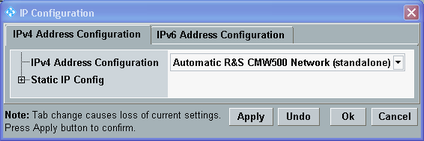
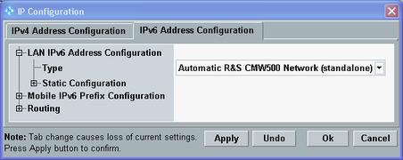

This section introduces you to configuring the IP network settings of the DAU according to your test setup. Ensure correct settings before using the DAU.
The DAU IP configuration is specified via the "Data Application Control" dialog. You can either configure the settings manually via the "IP Config" tab of the dialog or you can use the "Initial Setup Wizard".
Press "Setup" to open the "Setup" dialog.
In section "System", press the button "Go to config".
The "Data Application Control" dialog opens.
Open the "Data Application Control" dialog.
Press the "Wizard" key at the (soft-) front panel to open the wizard dialog.
On the tab "Application Wizards", run the "Initial Setup Wizard".
Open the "IP Config" tab of the "Data Application Control" dialog.
Press the "Config" hotkey to open the configuration dialog.
Configure all settings as desired. There is a tab for IPv4 settings and one for IPv6 settings. If you go from one tab to the other, you lose any changes. So press the "Apply" button before changing the tab.
For a standalone setup, select "Automatic R&S CMW500 Network (standalone)" for IPv4 and IPv6. You need no further configuration.

IPv4 tab, standalone setup
IPv6 tab, standalone setupFor a setup with external network, configure the settings compatible to your network, either by defining a static configuration or by using dynamic mechanisms supported by your network.
For an introduction to IP address formats and to the IP configuration methods supported by the DAU, refer to the following sections.
For a description of the "IP Config" tab and its configuration dialog, see "IP Config Tab".
To ensure that your changes are effective for a running protocol test, restart the test. To apply them to a signaling application already generating a signal, switch the downlink signal off and on again in the signaling application.